Layout side study: ours, ours + timing fixes, Claude-fixed
Four frames per section and version. Claude may change only layout and timing; every on-screen string is checked to be identical. Approve the study set only if the left column has no fault that makes a question unanswerable.
Tovan sums
admission: complete, clean
| section | ours | ours + timing fixes | Claude-fixed |
|---|
s1
Definition and Formula
MVQS 86.2 → 85.3- overlap: After the formula and arrow fade out, move a ⊕ b up to UP*2, below the title and clear of the circles. Keep 'Result' centred in the merged circle.
- other: Use a single ReplacementTransform from a VGroup of copies of both circles into merged_circle, so the yellow circle stays on screen and is faded out at the end.
- crowded: Remove the manual shift so the label sits at the circle centre, now that a ⊕ b has moved up.
|  | 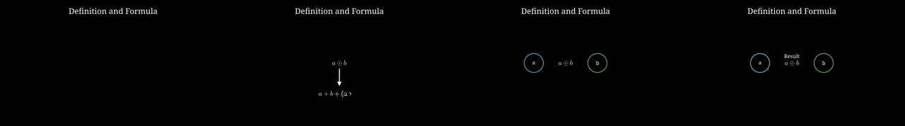 | 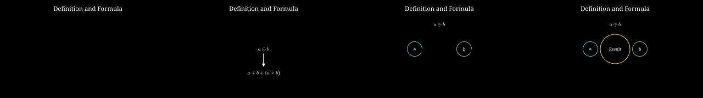 |
s2
Commutativity and Identity
MVQS 82.4 → 81.0- other: The expression has only three glyphs (7, ⊕, 0), so index 3 never existed and the zero was never faded, unlike on the left side. The fade now uses index 2, the actual '0' glyph, so both sides behave the same.
|  | 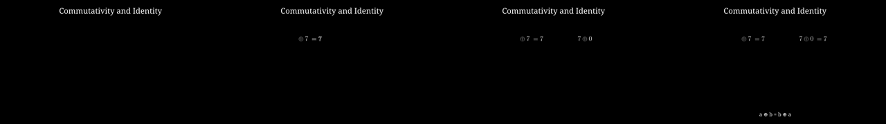 | 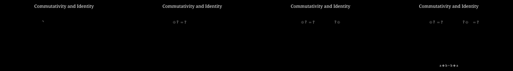 |
s3
The Absorbing Element (-1)
MVQS 85.0 → 89.6- other: Labels were placed at the origin before the circles moved to the edges, so they floated in the center and were not attached to their circles; 'b' was shifted up as a workaround. Moved each label onto its circle's center after positioning and removed the shift hack.
- overlap: Each label now sits on its own circle, and the '-1' label moves together with its circle during the approach animation.
|  | 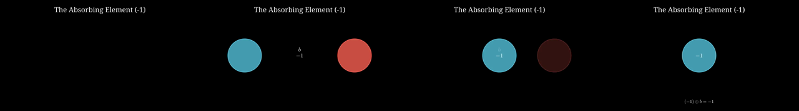 | |
s4
Chained Operations Example
MVQS 86.4 → 86.3- leftover: Replaced Transform with ReplacementTransform, so expr2 itself is on screen and the final FadeOut(expr2) removes it; no stale expr1 copy is left behind.
- other: The pieces were chained with next_to from the centred expr1, so the row drifted off to the right with wide gaps. They are now arranged as one row with buff=0.25 and centred on screen.
|  | 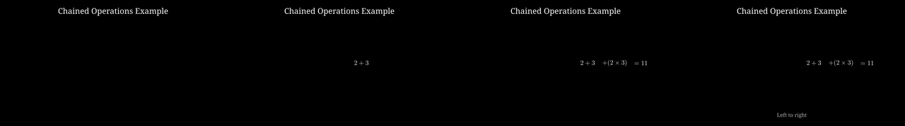 | 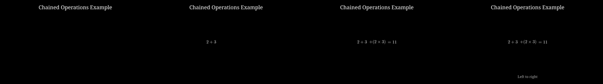 |
Krell steps on a grid
admission: complete, layout below the bar
| section | ours | ours + timing fixes | Claude-fixed |
|---|
s1
The Krell Transformation Rule
MVQS 72.2 → 82.3- overlap: Scaled the grid to 0.55 and centred it at DOWN*0.75 so P (y≈2.0) and Q (y≈1.45) sit below the title. The grid now ends above the narration line.
- overlap: Removed the ad-hoc shifts so the arrow runs from P to Q. Placed label_P at the upper-left of P so it does not collide with the Swap label.
- overlap: With the new grid placement, Swap sits above the arrow, below the title and clear of label_P.
- overlap: Moved the formula to the bottom edge, where the narration was before it faded out.
|  | 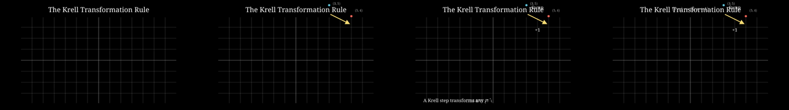 | 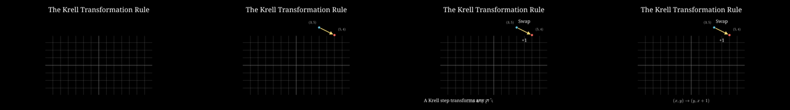 |
s2
Grid Point Validity
MVQS 80.9 → 80.7- off_screen: Scaled the narration to fit within 13 units of width, kept it at the bottom edge and drew it above the grid.
- other: Removed the arbitrary -0.37*RIGHT shift so the arrow starts at the old point and ends at the new point.
- overlap: Placed the (x, y) label up-right of the point so the arrow does not pass through it.
- other: Positioned the checkmark to the right of the visible 'x + 1' label of the new point.
|  | 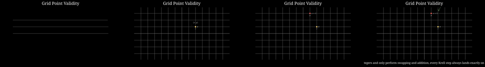 | 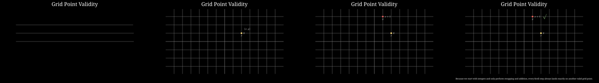 |
s3
The Staircase Path from Origin
MVQS 84.8 → 84.8 | 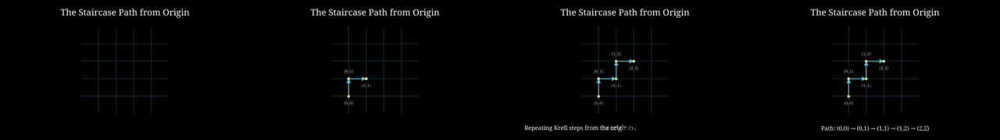 |  |  |
s4
The Double Step Identity
MVQS 77.5 → 90.1- overlap: Removed the upward shift; placed label2 up and to the right of the middle of arrow2 (next_to(arrow2.get_center(), UR, buff=0.4)), so it clears the title, label1 and net_label
- overlap: Placed label_B down and to the right of B (next_to(B, DR, buff=0.1)) so the dashed line no longer runs through it
| 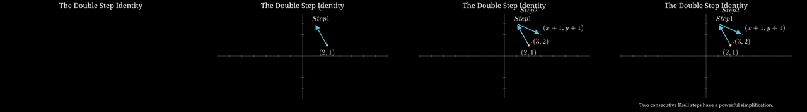 |  | 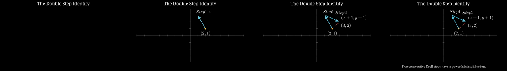 |
Vorn sequences
admission: complete, layout below the bar
| section | ours | ours + timing fixes | Claude-fixed |
|---|
s1
The Seed and the Rule
MVQS 90.5 → 90.1- off_screen: Dropped font_size from 24 to 20, removed the sideways and downward shifts, and capped the width at 13 so the line is centered inside the frame.
- other: Removed the 1.07 upward shift that left the box empty. Widened the box to 5.6 so it fits the formula, and centered the formula inside it.
- crowded: Arranged the seeds as a centered row at y=-1. Placed the arrow just above them and the box above the arrow. Narration lines now sit at the bottom edge, clear of the seeds.
|  | 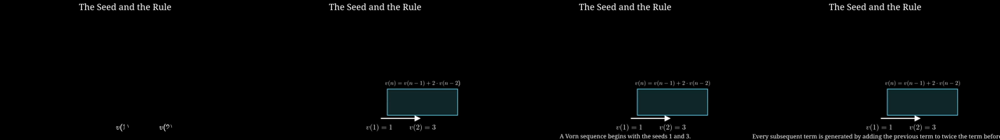 | 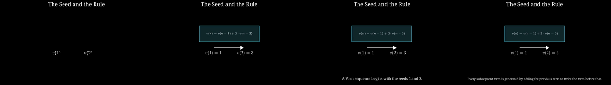 |
s2
Calculating v(3) and v(4)
MVQS 88.4 → 88.4 |  |  | 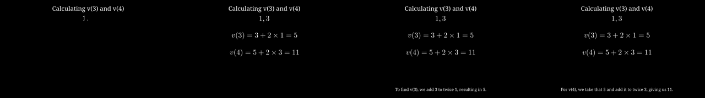 |
s3
The Odd Number Property
MVQS 86.5 → 87.0- other: Each 'Odd' label was placed right of its checkmark and then shifted up, so it sat over the next circle (the label for 1 appeared over 3, and the last one floated over empty space). Each label is now placed directly above its own circle and the stacked shifts are removed.
- other: Checkmarks sat in the gaps between circles, so it was unclear which circle each one belonged to, and the last one pointed at nothing. Each checkmark is now placed directly below its own circle.
- leftover: The final fade-out now also removes the sequence circles, checkmarks and labels instead of leaving them on screen.
| 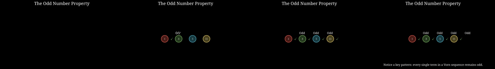 |  | 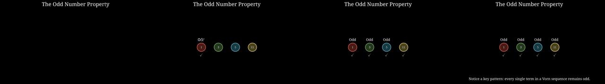 |
s4
Growth Rate Analysis
MVQS 90.2 → 90.4- crowded: Set the ratio labels to font_size=36 so neighbouring fractions no longer nearly touch each other.
- crowded: Place it with next_to(title, DOWN, buff=0.3) instead of to_edge(UP).shift(DOWN*0.5) so it no longer crowds the title.
- other: Arrange the terms in a VGroup with buff=1 and center the row slightly below the middle (DOWN*0.3) for a balanced layout.
| 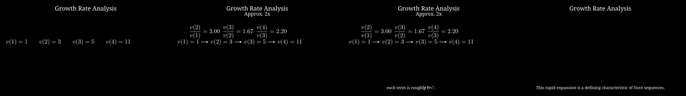 |  | 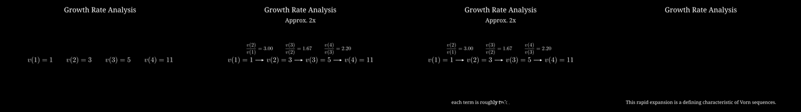 |
Glint numbers
admission: complete, clean
| section | ours | ours + timing fixes | Claude-fixed |
|---|
s1
Definition and First Rule
MVQS 88.8 → 89.4- overlap: These texts touched or overlapped the top of the large '21'. They are now placed below the number with next_to(num, DOWN, buff=0.6), in the free space left after the definition fades out.
- crowded: The line nearly spans the full frame width, so it is now capped with scale_to_fit_width at config.frame_width - 1 when it is wider than that.
| 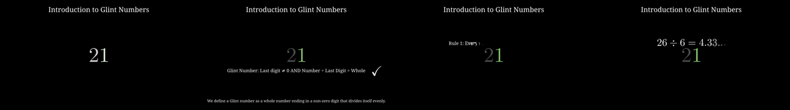 |  | 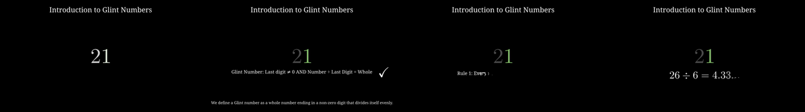 |
s2
The Zero Exclusion Rule
MVQS 92.8 → 92.3- leftover: The white copy was never removed: it sat on top of the red zero, hiding the highlight, and stayed on screen after FadeOut(num). Its shifts also cancel out, so no shake was visible. The zero is now shaken with Wiggle, and the copy is removed right after the shake.
- unreadable_text: The 50 was tiny and almost hidden by the thick cross. Enlarged it (font_size 96) and gave it z_index 1 so it stays readable above the X.
- overlap: The rule text touched the bottom ends of the cross. It now uses to_edge(DOWN, buff=0.3), matching the narration lines and clearing the cross.
|  | 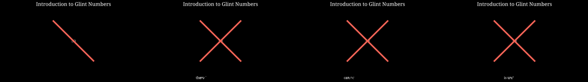 | 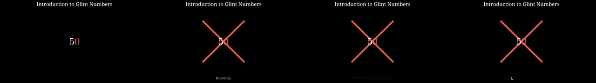 |
s3
The Five Inclusion Rule
MVQS 84.5 → 84.6- other: The rule is placed below the small checkmark, so it sits off-center and runs toward the right edge. It is now placed below the equation and centered with the rest of the content.
|  | 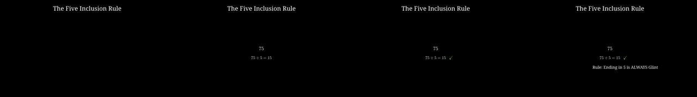 | 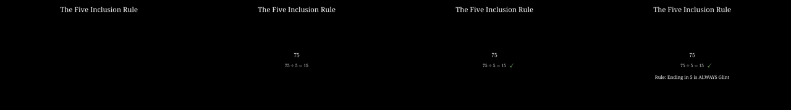 |
s4
Worked Examples: Success vs Failure
MVQS 88.4 → 67.0- other: The boxes were pushed to the right of the numbers and highlighted empty space. They now sit on the last digit ('4' and '6'), are narrowed to 0.4 so they do not cover the first digit, and are drawn behind the numbers (z_index) so the digits stay readable.
| 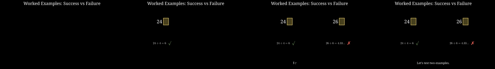 |  | 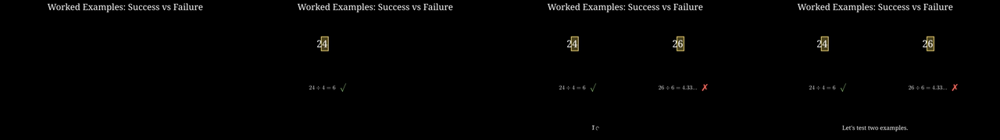 |
Mirthful triangles
admission: complete, layout below the bar
| section | ours | ours + timing fixes | Claude-fixed |
|---|
s1
Defining Mirth
MVQS 86.7 → 86.8- overlap: Removed the separation shifts and placed calc3 directly below calc1 (next_to DOWN, left-aligned, buff 0.4). calc4 stays to the right of calc3.
- crowded: Moved 'Mirthful!' under the inequality group on the left, next_to DOWN with buff 0.4, away from the triangle labels.
- other: Aligned rule2 and rule3 on the left edge of the line above (aligned_edge=LEFT) and centered the whole list.
|  | 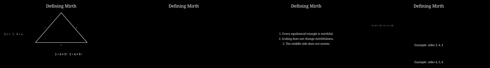 | 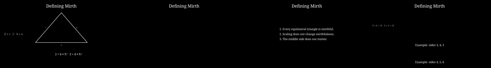 |
s2
The Equilateral Case
MVQS 90.0 → 89.7- overlap: Moved the triangle up to UP*1.2 and reduced the condition buff (0.6) and check buff (0.4), so the equation stack sits higher. Removed the upward shift on the narration so it stays at the bottom edge, clear of the equations.
- other: Merged them into one chained animation, triangle.animate.set_fill(GREEN, opacity=0.8).scale(1.05). With two calls the second overrode the first, so the green fill never appeared.
|  | 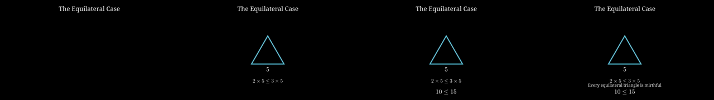 | 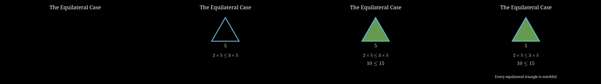 |
s3
Scaling Invariance
MVQS 72.9 → 77.7- overlap: Labels were attached to vertices, so they sat inside or on the triangle (e.g. '4', '8', '2' inside; '12' and '2.5'/'3' on the strokes). Each label now sits outside the triangle, next to the midpoint of its side and pushed away from the centroid.
- off_screen: The triangles are now placed at fixed inner positions (x=-4 and x=3.5), so the outer labels stay inside the frame.
- overlap: The new side-midpoint placement spreads the labels around the triangle so they no longer overlap each other or the triangle.
- overlap: msg stays at the bottom edge and narration is placed directly above it with next_to(msg, UP).
- other: All three checks are placed at the same spot (UP*2.2), above the triangles and clear of the bottom text.
|  | 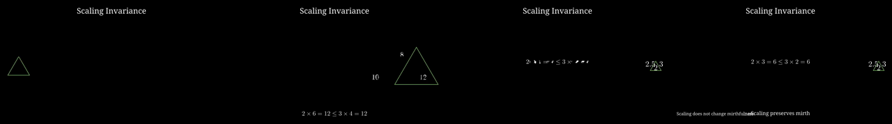 | 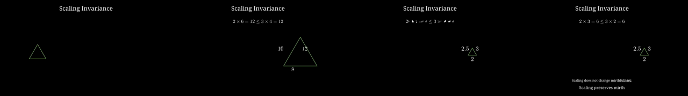 |
s4
Worked Examples
MVQS 91.4 → 91.4 |  | 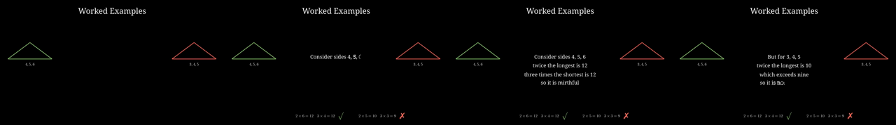 |  |
Sorrel counts of lattice rectangles
admission: complete, layout below the bar
| section | ours | ours + timing fixes | Claude-fixed |
|---|
s1
Defining the Sorrel Count
MVQS 72.1 → 81.5- overlap: Placed the rectangle and dots on the grid with grid.c2p and scaled the rectangle to grid units. The rectangle is now lower, so the '8' label sits well below the formula.
- overlap: Placed the 3x3 example on the grid (scaled to 0.8, centered at grid.c2p(1.5,1.5)), so its top label now sits below the title.
- other: All rectangles and dots now use grid.c2p coordinates and grid-unit scaling.
- leftover: Fade out the first rectangle and its dots together with the counts and formula before the example appears.
- leftover: Added the example's interior and edge dots to the final FadeOut. The first rectangle's dots and rect are now faded out earlier.
| 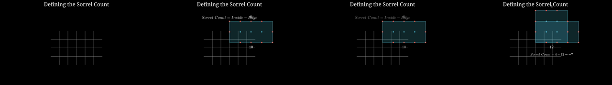 |  | 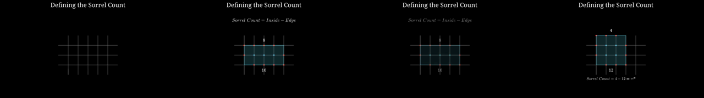 |
s2
The Formula for w × h Rectangles
MVQS 92.1 → 92.1- off_screen: Placed it just below the title with next_to(title, DOWN, buff=0.3) so it sits fully on screen, clear of the title and the rectangle.
- off_screen: Removed the extra downward shift so the formula sits inside the frame margin.
- other: Used ReplacementTransform and faded out final_formula at the end so the transformed object is tracked and removed cleanly.
| 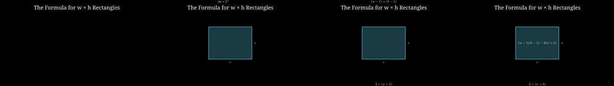 |  | 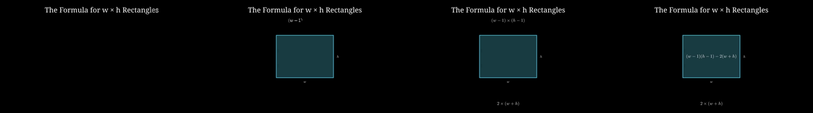 |
s3
Symmetry Rule
MVQS 87.0 → 80.5- off_screen: Moved the rectangles to the left (LEFT*2.5) and set the label stacks in a column on the right (RIGHT*2.5), so the 4-unit-tall rectangle no longer pushes the labels off the bottom edge.
- overlap: With the labels moved to the right column, the bottom strip is free, so invariant_text no longer overlaps any label.
- overlap: The labels now sit beside the rectangle instead of under it, so the rectangle never covers them during the transform.
| 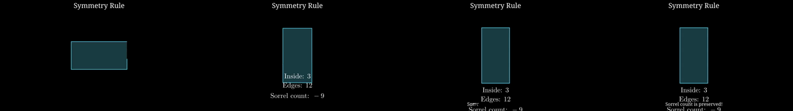 |  | 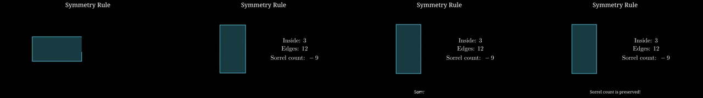 |
s4
Worked Example: 3x3 Square
MVQS 75.5 → 79.5- overlap: Built the yellow and green dots at the positions of the scaled, centred grid dots. They were placed at raw [i, j] coordinates and sat off the lattice.
- overlap: Removed the ad-hoc shift so the label sits above the edge dots, clear of them.
- overlap: Moved calc and result to DOWN*1.9, below the grid.
- overlap: Sized rule_box to the width of rule_text plus padding, so the text fits inside the box.
|  | 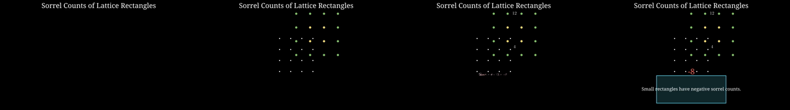 | 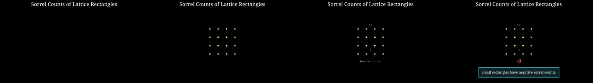 |
Quill distance
admission: complete, clean
| section | ours | ours + timing fixes | Claude-fixed |
|---|
s1
The Asymmetric Grid
MVQS 83.0 → 83.2- overlap: Moved the grid up with to_edge(DOWN, buff=1.0) so its bottom edge is at y=-3.0, leaving the narration strip clear of the grid.
- overlap: Shifted label_h right by 0.5 (keeping the downward offset) so it sits clear of the 'A' label.
| 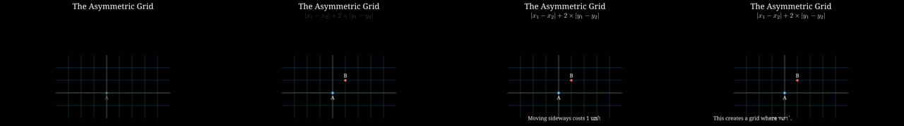 |  | 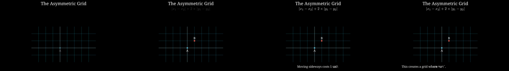 |
s2
Symmetry and Direction
MVQS 85.6 → 85.9- unreadable_text: Gave both texts a semi-opaque background rectangle and a higher z_index so the grid lines do not run through the letters.
- unreadable_text: Raised the title's z_index and gave the symmetry header a background rectangle so the header stays above the grid lines.
- unreadable_text: Added background rectangles to both cost labels.
- other: Removed these from the final FadeOut. They were never added to the scene, so fading them out would make them flash on screen at the very end.
|  | 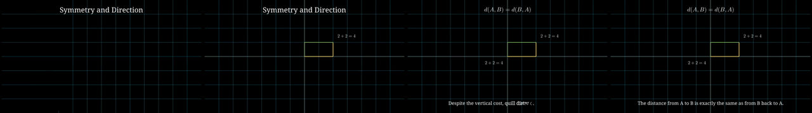 | 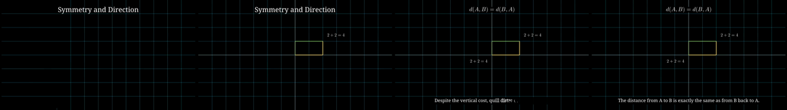 |
s3
The Shape of Distance 2
MVQS 87.6 → 88.9- overlap: Placed calc3 above p3, moved p3_label to the left of p3, and moved calc1 to the right of p1 and calc2 to the left of p2 so the row above the axis is clear.
- overlap: Removed the shift, placed calc4 below p4, and moved p4_label to the left of p4.
- overlap: Placed p5_label to the right of p5.
- overlap: Removed the shift and placed cost_label just below p5 in the space freed above the axis.
- leftover: Added grid to the final FadeOut.
| 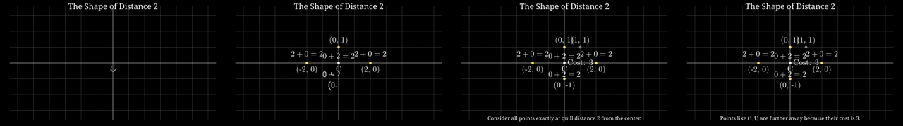 |  | 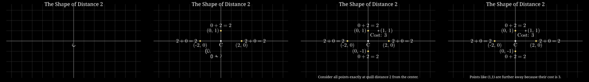 |
s4
Worked Example Calculation
MVQS 83.7 → 83.7 |  | |  |
Dapple numbers
admission: complete, layout below the bar
| section | ours | ours + timing fixes | Claude-fixed |
|---|
s1
Defining the Condition
MVQS 85.1 → 83.0- other: The number was shifted up by 0.72 after the pulse copy was made, so the glow was drawn at a different spot than the number and the number ended up crowded under the title. I removed that shift so the number stays at UP*1.5 and the pulse lines up exactly on it.
|  | | |
s2
The Multiple of Ten Rule
MVQS 78.4 → 90.5- off_screen: Set unit_size to 0.12 so the line is 12 units long. Removed the stray shift and centred the line at DOWN*0.5.
- overlap: Placed zero_label and each num_label above the line (next_to UP) so they no longer cover the built-in tick numbers.
- overlap: Moved zero_label above the line with buff=0.45 so it clears the cross.
- off_screen: Aligned its left edge with the cross (aligned_edge=LEFT) and put it below the tick numbers.
- crowded: Put the dapple_text labels above the number labels at font_size 20 so neighbours keep clear gaps.
- other: Fade out each mobject only once.
|  | | |
s3
Non-Examples and Edge Cases
MVQS 84.1 → 84.1 |  |  | |
s4
The Reversal Property
MVQS 73.6 → 84.2- overlap: Moved the original 52 up to UP*1.5 and placed digit5 and digit2 side by side at DOWN*0.8 (LEFT/RIGHT 0.6). Each digit now appears with TransformFromCopy from 52, so the digits no longer stack on each other or on 52.
- overlap: The red digits are now placed at the digit positions and 25 is centred on the digit pair, away from 52.
- overlap: The arrow now sits to the right of the digit pair with 'Reversal' above it.
- leftover: dapple_label now fades out during the reversal step and is dropped from the final FadeOut.
| |  | |
Brisk folds of a list
admission: INCOMPLETE (excluded), layout below the bar
| section | ours | ours + timing fixes | Claude-fixed |
|---|
s1
The Folding Mechanism | | not in video | not in video |
s2
Odd-Length Edge Case | | not in video | not in video |
s3
Rule 1: Total Preservation | not in video | not in video | not in video |
s4
Rule 2: Length Reduction | | not in video | not in video |
Orbit words
admission: complete, clean
| section | ours | ours + timing fixes | Claude-fixed |
|---|
s1
The Origin and the Rule
MVQS 87.6 → 87.8- off_screen: It sat above the top edge, on top of the title, and never showed in any frame. It now sits at to_edge(DOWN, buff=0.8), in the free space below the green rule. It fades out before the narration appears there.
- overlap: The text overlapped the blue arrow and the top of the big X. It is now placed at to_edge(DOWN, buff=0.8), below the green label, after the narration has faded out.
- overlap: The text overlapped the blue arrow and the big X. It is now placed at to_edge(DOWN, buff=0.8), the same clear spot below the green label.
| |  | |
s2
Step 1: From X to XYY
MVQS 89.7 → 89.5- leftover: Replaced Transform with ReplacementTransform so xyy_word is the object actually on screen. The final FadeOut now removes the word instead of leaving x_word behind.
| | |  |
s3
Step 2: From XYY to XYYYXYX
MVQS 68.4 → 89.0- overlap: Arranged the three rewritten pieces in a row with buff 0.5, placed below the rules, and moved final_word below that row.
- overlap: Moved the parts to word1's former position and faded them in as word1 fades out, so each letter is visible before it is rewritten.
- leftover: Faded them out in the final clean-up together with the title, rules and final word.
- other: Removed these redundant FadeOuts so the old narration no longer reappears and morphs; each ReplacementTransform now swaps the visible caption.
|  | | |
s4
Verification and Growth
MVQS 87.4 → 87.4 |  |  | |
Vells of 2×2 grids
admission: complete, clean
| section | ours | ours + timing fixes | Claude-fixed |
|---|
s1
Defining the Vell Formula
MVQS 80.3 → 79.9- overlap: The arrow ran from beyond the top-left of 'a' to beyond the bottom-right of 'd', so its line and tip were drawn over both letters. It now runs from the bottom-right corner of 'a' to the top-left corner of 'd' with a small buff, so both entries stay readable.
| |  | |
s2
Worked Example Calculation
MVQS 83.5 → 83.8- overlap: Moved the multiplication line to its own row centred below the matrix (buff 0.5).
- overlap: Laid out the subtraction terms and the final result as one row centred below the matrix, spaced with arrange(RIGHT, buff=0.2), and removed the ad-hoc shift on c_text.
| |  | |
s3
Rule: Multiplication Scope
MVQS 85.9 → 84.8- off_screen: Removed the ad-hoc shift. The text is now placed below both grids and centered at x=0, with a width cap so it stays inside the frame instead of touching the right edge.
- other: Arranged both grids in a VGroup with buff=1.5 and centered the group under the title, giving a balanced layout. The lines are created after positioning, so they still connect the correct entries.
| |  | |
s4
Rule: Swapping b and c
MVQS 90.5 → 90.5- leftover: Use ReplacementTransform so grid2 and grid2_label are the objects on screen and the final FadeOut acts on them.
- off_screen: Place the narration below vell_group2 and center it horizontally (set_x(0)), replacing the shift relative to the checkmark that pushed it to the right frame edge.
|  | | |
Lumen clocks
admission: INCOMPLETE (excluded), layout below the bar
| section | ours | ours + timing fixes | Claude-fixed |
|---|
s1
The Lumen Circle | | not in video | not in video |
s2
The Two-Mark Rule | | not in video | not in video |
s3
Wrapping Around | not in video | not in video | not in video |
s4
The Full Cycle | | not in video | not in video |